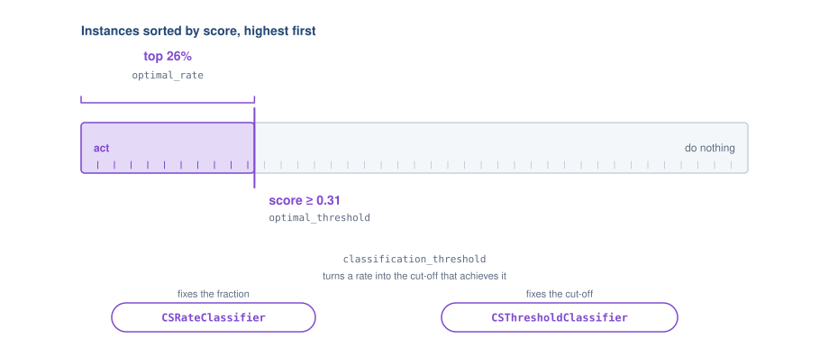
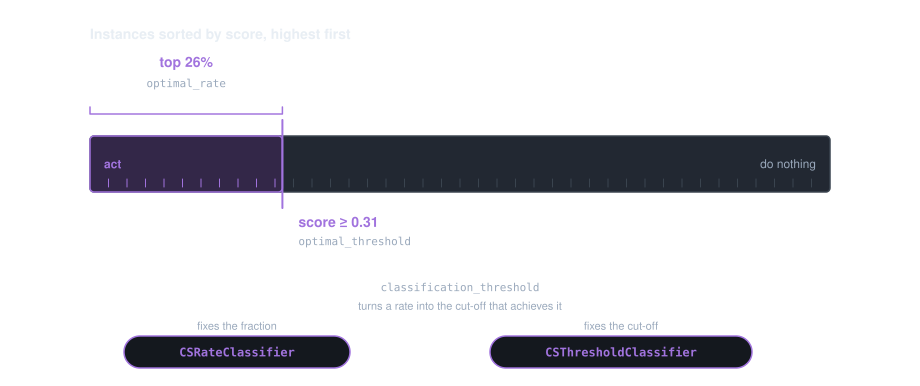

4.2. Threshold Tuning#
A trained model gives every instance a score. Turning that into an action needs one more decision: where to draw the line. The default of 0.5 is a convention, not an answer — it is optimal only when a false positive and a false negative cost exactly the same.
4.2.1. Two ways to say the same thing#
There are two equivalent ways to express where the line goes, and which one is more useful depends on who has to act on it.
A threshold is a cut-off on the score: act on everything above 0.31. It follows directly from the cost matrix — the break-even point is where the expected cost of acting equals the expected cost of not acting — and it does not depend on how many instances you happen to be scoring.
A rate is a fraction of the population: act on the top 26%. It is the form a campaign manager can work with, because it translates straight into a budget and a call list, and it is invariant to any monotone rescaling of the scores.

One cut, two ways of naming it.#

One cut, two ways of naming it.#
Every metric can produce both, and classification_threshold converts a
rate into the threshold that achieves it on a given set of scores:
from sklearn.datasets import make_classification
from sklearn.model_selection import train_test_split
from sklearn.linear_model import LogisticRegression
from empulse.metrics import Cost, CostMatrix, Metric, classification_threshold
X, y = make_classification(n_samples=2000, weights=[0.85], random_state=0)
X_train, X_test, y_train, y_test = train_test_split(X, y, test_size=0.4, random_state=0)
model = LogisticRegression(max_iter=500).fit(X_train, y_train)
y_score = model.predict_proba(X_test)[:, 1]
matrix = CostMatrix().add_fp_cost('c_fp').add_fn_cost('c_fn').set_default(c_fp=1.0, c_fn=10.0)
expected_cost = Metric(matrix, Cost())
rate = expected_cost.optimal_rate(y_test, y_score)
threshold = expected_cost.optimal_threshold(y_test, y_score)
print(f'act on the top {rate:.1%}, i.e. score >= {threshold:.3f}')
print(round(classification_threshold(y_test, y_score, customer_threshold=rate), 3))
The two meta-estimators in this page are the same two views made into estimators:
CSThresholdClassifier fixes a threshold,
CSRateClassifier fixes a rate. Prefer the rate form when you have a
capacity constraint — a fixed number of calls your team can make — or when the model’s scores are
ordinally meaningful but not calibrated.
Warning
A threshold derived from a cost matrix is a statement about probabilities, so it is only as trustworthy as the model’s calibration. See Scores, probabilities and calibration.
4.2.2. Analytic or searched#
Analytic (empulse) |
Cross-validated search (sklearn) |
|
|---|---|---|
Class |
||
How it works |
Derives the decision boundary analytically from the cost matrix at fit time |
Scans candidate thresholds via cross-validation and picks the best one |
Computation speed |
Fast — a single closed-form computation |
Slower — depends on |
4.2.3. CSThresholdClassifier#
CSThresholdClassifier wraps any probabilistic base classifier.
During fit it calibrates the probabilities (optional but recommended, sigmoid by default),
then computes the cost-optimal decision threshold analytically. During predict it applies
that stored threshold — or recomputes it on-the-fly when you pass fresh cost information.
4.2.3.1. Quick Start#
from sklearn.datasets import make_classification
from sklearn.linear_model import LogisticRegression
from empulse.models import CSThresholdClassifier
X, y = make_classification(n_samples=1000, random_state=0)
model = CSThresholdClassifier(
estimator=LogisticRegression(),
fp_cost=5, # cost of a false positive (e.g. wasted marketing spend)
fn_cost=1, # cost of a false negative (e.g. missed churner)
)
model.fit(X, y)
print(f"Optimal threshold: {model.threshold_:.4f}")
y_pred = model.predict(X)
4.2.3.2. Cost Matrix#
CSThresholdClassifier accepts costs the same two ways as every other cost-sensitive model —
plain tp_cost/tn_cost/fp_cost/fn_cost values, or a
Metric as loss. See Handing costs to an estimator.
One consequence is specific to this model: with instance-dependent costs, threshold_
becomes an array of shape (n_samples,) rather than a scalar, because each row has its own
break-even point. That is the strongest practical reason to use per-row costs at all.
import numpy as np
from empulse.models import CSThresholdClassifier
fn_cost = np.random.default_rng(0).uniform(1, 20, size=len(y_train))
model = CSThresholdClassifier(LogisticRegression(max_iter=500), fp_cost=1)
model.fit(X_train, y_train, fn_cost=fn_cost)
print(np.shape(model.threshold_))
Getting those arrays through cross-validation needs metadata routing — see Costs that differ per row.
4.2.3.2.1. Custom Metric#
For non-standard business objectives, pass a Metric instance
as the loss parameter. The model will learn the decision threshold that maximises /
minimises that metric:
import sympy
from sklearn.datasets import make_classification
from sklearn.linear_model import LogisticRegression
from empulse.metrics import Metric, MaxProfit, CostMatrix
from empulse.models import CSThresholdClassifier
clv, incentive_cost, contact_cost, accept_rate = sympy.symbols(
'clv incentive_cost contact_cost accept_rate'
)
cost_matrix = (
CostMatrix()
.add_tp_benefit(accept_rate * (clv - incentive_cost - contact_cost))
.add_tp_benefit((1 - accept_rate) * -contact_cost)
.add_fp_cost(incentive_cost + contact_cost)
)
profit_metric = Metric(cost_matrix, MaxProfit())
X, y = make_classification(n_samples=1000, random_state=0)
model = CSThresholdClassifier(
LogisticRegression(),
loss=profit_metric,
)
model.fit(X, y, clv=200, incentive_cost=10, contact_cost=1, accept_rate=0.3)
print(f"Optimal threshold: {model.threshold_:.4f}")
4.2.3.3. Probability Calibration#
An analytic threshold is a statement about probabilities, so it is only meaningful if the model’s
probabilities are. CSThresholdClassifier therefore calibrates by default, controlled by the
calibrator parameter — 'sigmoid', 'isotonic', None, or an estimator of your own.
Scores, probabilities and calibration covers the choice, and how much it moves the numbers.
4.2.3.4. Override the Threshold at Predict Time#
You can supply different costs at inference time without re-fitting the model. This is useful when costs vary by deployment context (e.g. different campaigns):
import numpy as np
from sklearn.datasets import make_classification
from sklearn.linear_model import LogisticRegression
from empulse.models import CSThresholdClassifier
X, y = make_classification(n_samples=500, random_state=0)
model = CSThresholdClassifier(LogisticRegression(), fp_cost=5, fn_cost=1).fit(X, y)
# Use the threshold learned at fit time
y_pred_default = model.predict(X)
# Override: higher false-positive penalty at inference (more conservative)
y_pred_conservative = model.predict(X, fp_cost=20, fn_cost=1)
# Count how many fewer positives the conservative threshold produces
print(f"Standard positives : {y_pred_default.sum()}")
print(f"Conservative positives: {y_pred_conservative.sum()}")
Note
Overriding at predict time recomputes the threshold analytically from the new
costs — no re-fitting occurs. This does not work with MaxProfit-based
metrics because that strategy requires label information from the training set.
4.2.3.5. sklearn Integration#
CSThresholdClassifier delegates predict_proba, predict_log_proba and
decision_function to the wrapped estimator, so it drops into
Pipeline, cross_val_score and
GridSearchCV unchanged. Hyperparameters of the wrapped estimator
are addressed through estimator__, and per-row costs travel through metadata routing — see
Costs that differ per row.
from sklearn.model_selection import GridSearchCV
search = GridSearchCV(
CSThresholdClassifier(LogisticRegression(max_iter=500), fp_cost=1, fn_cost=10),
{'estimator__C': [0.1, 1.0]},
cv=3,
)
search.fit(X_train, y_train)
print(search.best_params_['estimator__C'])
4.2.4. CSRateClassifier#
CSRateClassifier classifies the top-k most-likely-positive
samples as positive, where k is chosen to maximise the cost-sensitive metric. Instead
of a raw score threshold it learns a positive rate — the fraction of all samples that
should be labelled positive.
4.2.4.1. When to use CSRateClassifier over CSThresholdClassifier#
Your deployment has a fixed capacity constraint (e.g. “we can only call 10 % of customers”).
CSRateClassifiernaturally implements a top-k selection rule.Your probabilities are ordinal but not well-calibrated and you cannot or do not want to calibrate them.
You want a decision rule that is invariant to monotone transformations of the predicted scores.
4.2.4.2. Quick Start#
from sklearn.datasets import make_classification
from sklearn.linear_model import LogisticRegression
from empulse.models import CSRateClassifier
X, y = make_classification(n_samples=1000, random_state=0)
model = CSRateClassifier(
estimator=LogisticRegression(),
tp_cost=300, # benefit of catching a churner
fp_cost=10, # cost of contacting a non-churner
)
model.fit(X, y)
print(f"Optimal positive rate: {model.rate_:.4f}")
y_pred = model.predict(X)
4.2.4.3. Custom Metric#
Like CSThresholdClassifier, the rate classifier accepts a custom
Metric:
import sympy
from sklearn.datasets import make_classification
from sklearn.linear_model import LogisticRegression
from empulse.metrics import Metric, MaxProfit, CostMatrix
from empulse.models import CSRateClassifier
clv, incentive_cost, contact_cost, accept_rate = sympy.symbols(
'clv incentive_cost contact_cost accept_rate'
)
cost_matrix = (
CostMatrix()
.add_tp_benefit(accept_rate * (clv - incentive_cost - contact_cost))
.add_tp_benefit((1 - accept_rate) * -contact_cost)
.add_fp_cost(incentive_cost + contact_cost)
)
profit_metric = Metric(cost_matrix, MaxProfit())
X, y = make_classification(n_samples=1000, random_state=0)
model = CSRateClassifier(LogisticRegression(), loss=profit_metric)
model.fit(X, y, clv=200, incentive_cost=10, contact_cost=1, accept_rate=0.3)
print(f"Optimal positive rate: {model.rate_:.4f}")
4.2.4.4. Override the Rate at Predict Time#
Exactly like CSThresholdClassifier, you can supply fresh cost parameters at
inference time:
from sklearn.datasets import make_classification
from sklearn.linear_model import LogisticRegression
from empulse.models import CSRateClassifier
X, y = make_classification(n_samples=500, random_state=0)
model = CSRateClassifier(LogisticRegression(), tp_cost=300, fp_cost=10).fit(X, y)
# Double the benefit → expect a higher positive rate
y_pred_generous = model.predict(X, tp_cost=600, fp_cost=10)
print(f"Default positives: {model.predict(X).sum()}")
print(f"Generous positives: {y_pred_generous.sum()}")
4.2.5. TunedThresholdClassifierCV with empulse Metrics#
Scikit-learn 1.5+ ships with
TunedThresholdClassifierCV, which scans a grid
of threshold candidates via cross-validation and picks the one that maximises a scorer.
Any callable Empulse metric — whether a standalone score function or a
Metric instance — can be wrapped into a scorer with
make_scorer and plugged straight in.
Note
Use TunedThresholdClassifierCV when:
your classifier’s probability estimates are not well-calibrated and you cannot add calibration, or
the cost structure changes frequently between evaluations and you want the threshold tuned holistically via cross-validation rather than analytically.
4.2.5.1. Using a built-in empulse score function#
All standalone empulse score functions (mpc_score, empc_score, expected_cost_loss, etc.)
follow the (y_true, y_score, **kwargs) → float signature accepted by
make_scorer:
from sklearn.datasets import make_classification
from sklearn.ensemble import GradientBoostingClassifier
from sklearn.metrics import make_scorer
from sklearn.model_selection import TunedThresholdClassifierCV
from empulse.metrics import mpc_score
X, y = make_classification(n_samples=1000, random_state=0)
scorer = make_scorer(
mpc_score,
response_method='predict_proba',
greater_is_better=True, # MPC is a profit metric — higher is better
clv=200,
incentive_cost=10,
contact_cost=1,
accept_rate=0.3,
)
model = TunedThresholdClassifierCV(
estimator=GradientBoostingClassifier(),
scoring=scorer,
cv=5,
)
model.fit(X, y)
print(f"Tuned threshold: {model.best_threshold_:.4f}")
y_pred = model.predict(X)
4.2.5.2. Using a custom Metric instance#
A Metric object is itself callable with signature
(y_true, y_score, **parameters) → float, so it can be passed directly to
make_scorer. Set greater_is_better to True
when you use MaxProfit or Savings
(higher is better) and to False for Cost (lower is better):
import sympy
from sklearn.datasets import make_classification
from sklearn.ensemble import GradientBoostingClassifier
from sklearn.metrics import make_scorer
from sklearn.model_selection import TunedThresholdClassifierCV
from empulse.metrics import Metric, MaxProfit, CostMatrix
# --- Define the custom profit metric ---
clv, incentive_cost, contact_cost, accept_rate = sympy.symbols(
'clv incentive_cost contact_cost accept_rate'
)
cost_matrix = (
CostMatrix()
.add_tp_benefit(accept_rate * (clv - incentive_cost - contact_cost))
.add_tp_benefit((1 - accept_rate) * -contact_cost)
.add_fp_cost(incentive_cost + contact_cost)
)
profit_metric = Metric(cost_matrix, MaxProfit())
# --- Create scorer from the Metric ---
scorer = make_scorer(
profit_metric,
response_method='predict_proba',
greater_is_better=True, # MaxProfit — higher is better
clv=200,
incentive_cost=10,
contact_cost=1,
accept_rate=0.3,
)
# --- Tune the threshold ---
X, y = make_classification(n_samples=1000, random_state=0)
model = TunedThresholdClassifierCV(
estimator=GradientBoostingClassifier(),
scoring=scorer,
cv=5,
)
model.fit(X, y)
print(f"Tuned threshold: {model.best_threshold_:.4f}")
y_pred = model.predict(X)
4.2.5.2.1. Using a cost-minimisation Metric#
When the strategy is Cost, the metric returns a loss
(lower is better). Set greater_is_better=False accordingly:
import sympy
from sklearn.datasets import make_classification
from sklearn.linear_model import LogisticRegression
from sklearn.metrics import make_scorer
from sklearn.model_selection import TunedThresholdClassifierCV
from empulse.metrics import Metric, Cost, CostMatrix
fp, fn = sympy.symbols('fp fn')
cost_matrix = (
CostMatrix()
.add_fp_cost(fp)
.add_fn_cost(fn)
)
cost_metric = Metric(cost_matrix, Cost())
scorer = make_scorer(
cost_metric,
response_method='predict_proba',
greater_is_better=False, # Cost — lower is better
fp=5.0,
fn=1.0,
)
X, y = make_classification(n_samples=1000, random_state=0)
model = TunedThresholdClassifierCV(LogisticRegression(), scoring=scorer, cv=5)
model.fit(X, y)
print(f"Tuned threshold: {model.best_threshold_:.4f}")
4.2.5.2.2. Instance-dependent costs with metadata routing#
Instance-dependent costs (per-sample arrays) can be passed to the scorer via
metadata routing. Enable routing globally, request
the cost array on the scorer, then pass it to fit:
import numpy as np
from sklearn import set_config
from sklearn.datasets import make_classification
from sklearn.ensemble import GradientBoostingClassifier
from sklearn.metrics import make_scorer
from sklearn.model_selection import TunedThresholdClassifierCV
from empulse.metrics import expected_cost_loss
set_config(enable_metadata_routing=True)
X, y = make_classification(n_samples=1000, random_state=0)
# Per-sample false-positive cost (e.g. individual campaign spend)
fp_cost = np.random.default_rng(0).uniform(1, 10, size=len(y))
scorer = (
make_scorer(
expected_cost_loss,
response_method='predict_proba',
greater_is_better=False,
fn_cost=1.0,
)
.set_score_request(fp_cost=True) # tell the scorer to expect fp_cost
)
model = TunedThresholdClassifierCV(
estimator=GradientBoostingClassifier(),
scoring=scorer,
cv=5,
)
model.fit(X, y, fp_cost=fp_cost) # pass the array directly to fit
print(f"Tuned threshold: {model.best_threshold_:.4f}")
4.2.5.3. Combining threshold tuning with hyperparameter search#
TunedThresholdClassifierCV can be nested inside
GridSearchCV to jointly optimise both the base
estimator’s hyperparameters and the decision threshold:
import numpy as np
from sklearn.datasets import make_classification
from sklearn.ensemble import GradientBoostingClassifier
from sklearn.metrics import make_scorer
from sklearn.model_selection import GridSearchCV, TunedThresholdClassifierCV
from empulse.metrics import mpc_score
X, y = make_classification(n_samples=1000, random_state=0)
scorer = make_scorer(
mpc_score,
response_method='predict_proba',
greater_is_better=True,
clv=200,
incentive_cost=10,
contact_cost=1,
accept_rate=0.3,
)
tuned_model = TunedThresholdClassifierCV(
estimator=GradientBoostingClassifier(),
scoring=scorer,
cv=3,
)
grid_search = GridSearchCV(
tuned_model,
param_grid={
'estimator__n_estimators': [50, 100],
'estimator__max_depth': [3, 5],
},
scoring=scorer,
cv=5,
)
grid_search.fit(X, y)
best = grid_search.best_estimator_
print(f"Best params : {grid_search.best_params_}")
print(f"Best threshold: {best.best_threshold_:.4f}")
See also
Worked cost matrices — how to build a custom
MetricModels by supported strategy — which Empulse models accept a
MetricaslossLinear Cost-Sensitive Models — linear models that bake the cost-sensitive objective directly into training
TunedThresholdClassifierCV— sklearn reference